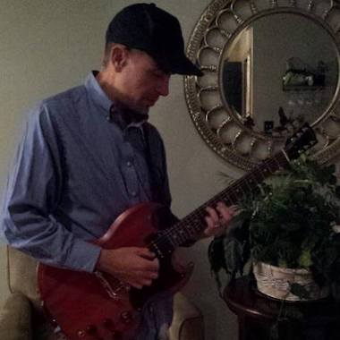

CPSC 21000 Section 001 | |
|  | I am Ray Klump, and I teach this dang course. I earned my Ph.D. in Electrical Engineering from the University of Illinois at Urbana-Champaign. I am married to Karen and have three kids: Conor, Lauren, and Evan. I like playing guitar and particularly like Gibson guitars. I have taught at Lewis since 2001, and I have been Chair of CaMS since 2010. |